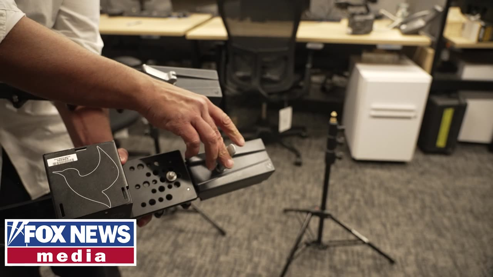
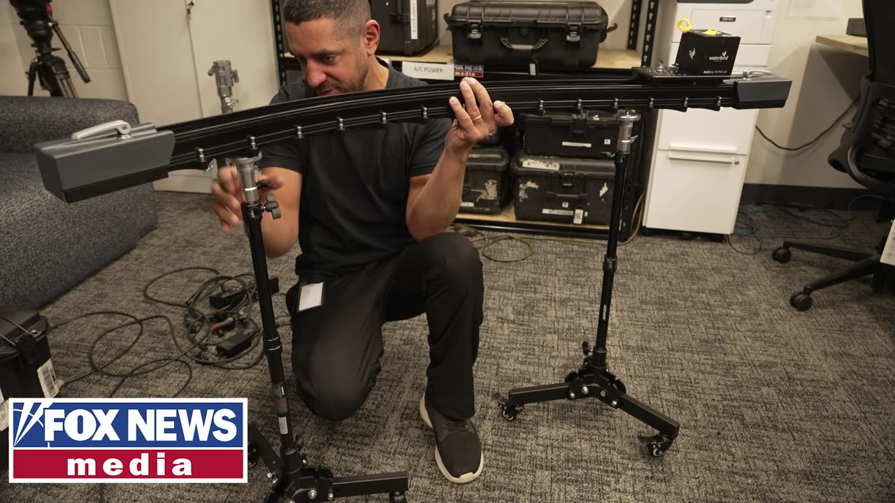
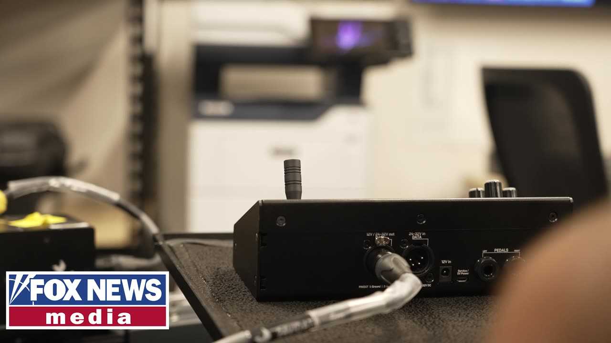
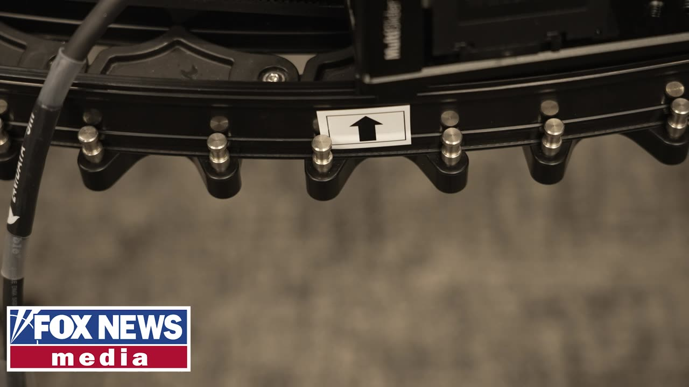
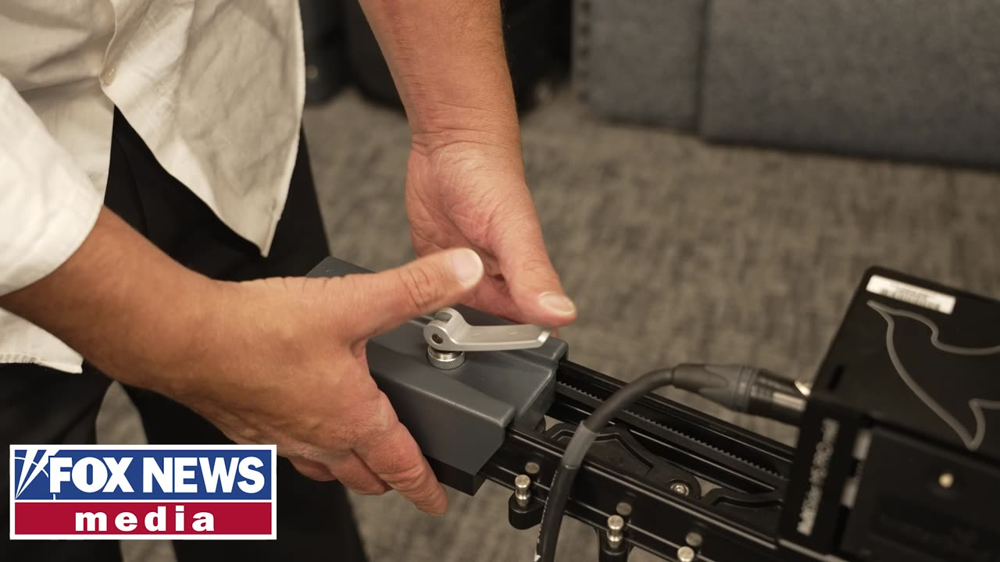
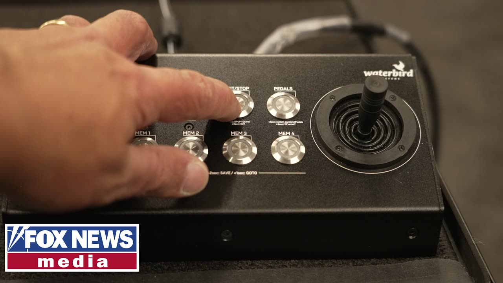
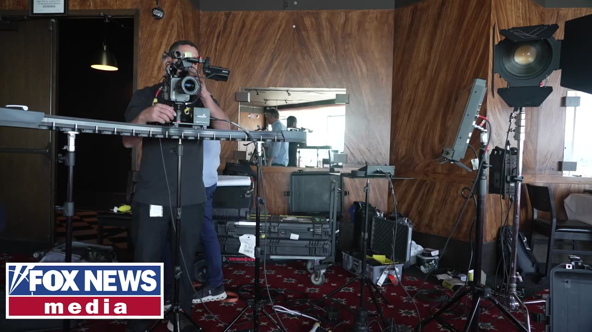

Waterbird Slider: Setup & Operation
How to build, angle and run the Waterbird arc slider for a smooth two-shot interview, plus a fix for a reversed joystick.
Step-by-step guide
1 · Know the kit

What's in the case
- Arc track: the curve lets you cut almost any angle or hold a simple two-shot.
- Ball head for the camera, which mounts to the motor.
- Two stands. They're enough for now. Heavier-duty stands may come later.
- Remote controller, connecting cable and power supply.

The controller
The joystick moves the camera along the track by hand. The buttons store track positions. The dials set pause, speed and ramp, and you can change them while the slider is moving.
2 · Set up the slider

Brakes off while it moves
Lever down = locked. Lever up = unlocked. Keep the brakes off whenever the carriage is travelling, to protect the slider.

Mount the track on the stands
Screw each stand into the second nut from the end of the track. The stands are on wheels, so you can spin them on. This is easier with two people.

Connect cable and power
- Male pins of the cable go into the controller.
- Female end goes into the motor.
- Plug the power supply into the motor, mount the camera, and power it on.
3 · Troubleshooting

Joystick moving the wrong way?
If pushing left sends the track right, the joystick is mirrored. Unplug the controller, then plug it back in while holding Ping Pong. The screen will read "Joystick swap", and left will move the track left again.
4 · Angle the track for a two-shot

Start at the centre mark
An arrow sticker marks the middle of the track. Use the joystick to line the lens up with the arrow, then aim the camera's crosshair at the middle of your subjects (here, the middle of the couch).

Check each end of the move
Drive the camera to the far left and check the monitor. The crosshair should still sit centred between your two subjects. Then do the same at the far right.

Nudge the track until it's centred
If an end is off, release the brake on that end and angle the track out ever so slightly until the crosshair is centred again.
Tip: have someone hold the middle and the other end while you adjust, so the positions you've already set don't move.
5 · Program the move

Set the in and out points
- Drive the camera to the far left position.
- Hold INIT/Stop until the light flashes red.
- Drive to the far right, and hold INIT/Stop again until it goes red.
- Press Ping Pong. The camera will now travel back and forth between the two points.

Dial in pause, ramp and speed
| Dial | What it does | Starting point |
|---|---|---|
| Pause | How long it waits at each end, in seconds (the same as "dwell" on the MYT slider). The dial is very sensitive. | ~2 sec |
| Ramp | How gently it accelerates from a stop into full motion | 60–70 |
| Speed | Top travel speed | 50–70% |
6 · Manual mode

Ride the speed during the interview
You can change the speed mid-move, even in Ping Pong. If you can tell a subject is about to say something important, slow the move down. Bring the speed back up once they finish the sentence.
7 · In the field

Full transcript Click any timestamp to jump the video there
Intro
Today we'll take a look at the Waterbird slider.
It's a good slider that has an arc to it,
so you can basically cut any angle
or do a simple two shot interview.
And we'll go through the controller
and troubleshoot any problems.
Let's dive in.
All right, so first let's go through the parts.
Parts list
We have the track itself.
There is a ball head that we'll use to put the camera on
and we can attach it to the actual motor.
Two stands I think is enough for it right now.
Maybe we will add three or change the stands later on
to some of the bigger heavy duty stands like that one.
You have the remote control.
This is a joystick that you can input the track positions
and also manually move the track with a joystick
and adjust the speed and the ramp in time
while it's moving.
This cable is what's gonna connect the actual motor
to the joystick to communicate and then the power source.
So we'll set all that up right now.
All right, so now to take out the slider.
The most important thing while it's moving around,
Slider setup
these brakes should be off
just for the longevity of the slider itself.
These brakes when they're down,
that means it's locked in.
When they're pointed up, that means it's unlocked
and we can move that how we want.
All right, so now we'll attach the track to the stand.
It's probably easy if you have two people for this
but for this purpose, we'll just put the stand on it
and I'm connecting it to the second nut from the end.
And luckily these have wheels
so we can just turn that in.
All right, and then we'll do the other side.
Okay, so that's in.
The male pins of the cable go into the controller.
The female of the cable goes into the motor itself.
Finally, we'll plug the power source into the motor,
the camera on and we're ready to get started.
Troubleshooting
Now, one thing I wanna show is that sometimes
the joystick was going in a mirrored direction.
So if that ever happens to you, unplug it.
And then when you plug it back in, hold down ping pong,
it's gonna say joystick swap
and now we're going the right way again.
Hitting left, the track is moving left.
Angle the track
All right, so now we're gonna talk about
how to actually move the track
and where it should line up
so that it actually works for an interview angle.
For example, if there are two people
sitting on the couch right here.
So the first thing I like to do is to set up the middle.
We've put an arrow here to designate
that this is the middle.
So we're gonna try to line up the lens
with this middle arrow.
So I'm gonna move the joystick to the left to line up.
Our camera is lined up there.
All right, so I'm just using the middle of the couch
and lining up the crosshair to middle of the couch
to designate that that's the middle position.
And I'm gonna move the joystick to the left
to designate the camera to the far left position.
I'll come back to the camera
and make sure that the crosshair
is centered between my two subjects.
It's pretty close but we can always adjust the track
so we'll do that now.
I'm gonna release the brake
and just move it back ever so slightly
until we're lined up center again on the crosshair.
Once that's done,
we'll go to the right position we wanna be at.
So I'm gonna take the camera
all the way to the right side.
And now in this case,
the crosshair is not lined up
to the center of the couch or between our two subjects.
So we will move the right side of the track.
We're gonna open up the brake of the track
and we're gonna ever so slightly angle out
until we're once again angled
with the crosshair in the middle.
Now something that I found that works
is having somebody hold down the middle section
or the left section while you're adjusting the track
so that the first two positions don't move
and you're only changing the third track to fix the angle.
Set in/out points
All right, now let's talk about
how to actually make the track move
and how we can use the controller
to make the movement we want.
All right, so I like to start on the left.
So I'm bringing the camera all the way to the left.
And then once it's in the position we want,
that's the farthest left.
I'm gonna hold down this button that says INIT,
which probably means initialize and stop.
So hold that down until it blinks.
We got a flashing red.
Now I'm gonna take all the way to my right.
We see the camera moving right.
And then I'm gonna hit initialize and stop again.
But I'm gonna hold it down each time until it goes red.
Now it's red.
Okay, once that's red,
the far left button says ping pong.
That'll make it go back and forth.
So we're gonna hit ping pong.
And now we're gonna start moving back and forth.
Now there's three dials that work for us in here.
One is pause.
That's the same as the MYT slider, which is dwell.
And that's in seconds.
So we can do it for one or two seconds.
Now let's reach the end.
It's gonna stop for four seconds
so that went to four, one, two, three, four.
It'll probably start now.
Okay, I'll put it back to two seconds.
That's at two seconds now.
This dial is very sensitive.
And then we have a speed and a ramp.
Ramp is how the acceleration is gonna go
from its stop position into its full motion.
I found that about 65, 60, 70 range
works pretty good for our situation
and the speed is on full right now.
And once again, something like 50 to 70%
is probably where we wanna be for our purposes.
One thing I really like about the slider
is the ability to control the speed of the movement
both manually or when we've set up points
and we're already going ping pong in the middle of the move,
Manual mode
right now I'm gonna slow it down
and it's come to a stop.
They come the other way.
I can gradually increase the speed and here it comes.
And I can slow it down.
Maybe if something, if I sense
that the subject is gonna say something important,
I can slow it down and start to increase the speed
and wait for them to finish a sentence
and then slow it back down.
So that's quite nice for manual mode.
One more thing we may wanna look at
is a bubble level for the camera
and a straight level just to make sure
the track is always in the right position
at every starting and stopping motion of the move.
Outro
All right, so that's a great use case for the slider.
We may wanna look at getting different stands
or other things, but so far
I think it's working pretty well
and I don't see much shake and jitter
once it's actually moving on the track.
I love the option to have the joystick
and the manual control
and let me know what you guys think.
Live setup
All right, so now we're gonna do a live setup
of the slider and we're gonna show the shots
of what it looks like in this room.